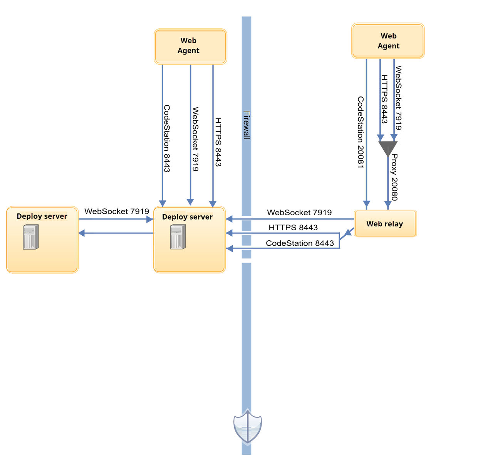

Web agent communication
For successful server and web agent communication, you must have configurations on the server and agent sides.
In most cases, the installer configures the properties that are mentioned later. This section provides the additional information that you must consider if issues arise in server and agent communication.
Server configuration
agentcomm.uri=wss://physical-host:port. The
information is stored in the server/conf/server/installed.properties file. The
default port is 7919. This port serves WebSocket endpoints that servers and web agents use and a
REST API that only web agents use. While setting the agentcomm.uri property, make
sure it meets these requirements:- The URL is in this format:
wss://physical-host-or-ip:port. ThewssURL scheme is required and is the only supported scheme. The port must be explicit. - The URL port must not conflict with ports for the UI.
- Each server must have a unique URL. URLs that refer to
localhost, a loopback address, or a load balancer only work for a single server configuration. - Every server in an HA cluster must be able to connect directly to this server with the URL.
- Agents and relays must be able to connect to one or more servers at the servers' URL ports. They can optionally be configured to use a common URL that all servers share, for example, one provided by a load balancer. However, servers must be configured with direct URLs.
- Relays support proxying HTTPS requests only. Any request through the relay that try to do HTTP are rejected with 501 error code. However, the relay itself listens on an HTTP protocol.
When you use web agents, each server in a cluster has a distinct URI and each server establishes a direct connection to every other server, which results in two connections between each server. The server-to-server connections advertise connected web agents to the cluster and exchange messages for them.
When a new server is added to a Web agent-enabled cluster, it connects to the previously defined servers. The other servers respond by connecting back to the new one. In normal operation, each server has two connections to each of its peers.
Web agent configuration
When you install a web agent, you specify the agentcomm.server.uri property. If
there is one server or if all servers share a URL, it can be configured directly, for example,
agentcomm.server.uri=wss://examplehost.org:7919. Configure multiple servers as a
comma-separated list that is embedded in a random scheme, for example,
agentcomm.server.uri=random:(wss://examplehost1.org:7919,wss://examplehost2.org:7919).
agentcomm.proxy.uri property
can define a single HTTP proxy URL or define a list in a random scheme. The property
is optional if the agent connects directly to servers.